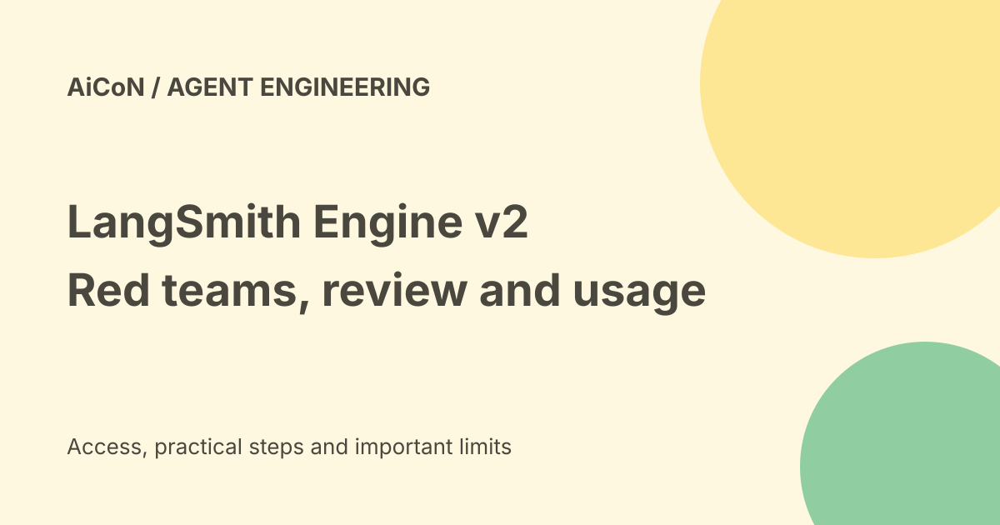

LangSmith Engine v2: red teaming, tested fixes and real access limits
Scoped recheck: 24 October 2026. Official documentation, pricing and policy review only; no account, repository, training, avatar, selfie, biometric, camera or payment test. Original publication date retained.
LangSmith Engine detects agent issues and proposes reviewed fixes. Both proactive red teaming and validated fixes remain described as private beta on the feature-access page. Red-team probes are real deployment requests that can trigger tools, so this is not a read-only review of old traces or a guarantee of safe autonomous production fixes.

What does Engine do?
LangChain describes Engine as an agent inside LangSmith that examines application activity, finds issues and suggests prompt or code changes.
It is aimed at teams building agents, not a general replacement for a consumer chatbot. Useful operation depends on the data, repository and runtime your team makes available.
Red teaming explained
The current documentation says Engine reads up to 25 recent traces and an optional repository to form hypotheses, then sends synthetic probes to a ready, non-preview Cloud baseline deployment in the same workspace. Starting a run needs runs:create and deployments:update as well as runs:read. These are real requests: each creates a thread/run and your agent can call its tools. Use a deployment with isolated test permissions and acceptable side effects, not live customer payments or messages merely because input is synthetic. Read-only trace/repository credentials do not make the target agent’s tools read-only.
Reports distinguish Confirmed, Needs Review, No Issue Found and Not Tested. Not Tested means missing coverage; no finding is not a safety certificate. The docs do not confirm Auth Isolation findings, and Session Integrity needs a two-turn probe. Findings stay in the red-team report rather than automatically creating issues, datasets, evaluators or feedback. The feature-access page still requests applications from paid LangSmith Deployment users; documentation is not proof your account was admitted.
A successful test suite only covers the tested cases. It does not prove an agent is immune to unsafe requests, private-data leaks or unexpected tool actions.
More issue types
The release lists errors, unmet requests, repeated tool calls, long action paths and trends in error rate, latency and cost.
Latency means delay. A trajectory is the sequence of messages and actions taken during a task. Long sequences can reveal wasted work, but a short answer is not automatically a correct one.
Automated fix testing is private beta
The detailed Engine v2 article says validation of proposed fixes is in private beta for existing LangSmith Deployment users.
It reproduces the offending inputs, tries candidate changes and evaluates results before presenting a fix for human review. Do not describe that as generally available autonomous production deployment.
Human review still matters
The release describes opening a pull request after reviewing a proposed fix. A pull request is a change submitted for review, not proof that the change has already gone live.
Inspect security, permissions and wider behaviour before merging. A fix for one failure can create another. Keep rollback and independent tests.
Plans and costs
The pricing page still lists Developer $0/seat/month, one seat and 5,000 base traces/month, and Plus $39/seat/month with 10,000 base traces, followed by usage charges. Plus explicitly includes Engine access and the September launch names Plus/Enterprise SaaS access. However, the current Engine security page says an Organization Admin can enable Engine for organizations on any plan. These official statements are not fully aligned: verify the entitlement, feature beta admission and billable estimate in your account. A free Developer seat or tracing allowance is not proof of free Engine runs.
The Engine launch says SaaS access is for Plus and Enterprise plans. A free Developer seat does not establish free Engine access. Seat fees are not the entire usage bill.
Usage is separate from seats
Current public pricing is $1 per LangChain Standard Unit (LSU), with an estimated 7-45 LSUs per Engine run, varying with work. The pricing FAQ says model usage for Engine analysis/fixes is included; do not add another assumed cloud-Engine model charge. Seat fees and other products, training, serving and external tools can still add costs. The FAQ says once every six hours, while current Engine docs describe a dynamic scan schedule. Do not promise a fixed cadence or derive a monthly bill from that mismatch.
Current Engine docs let admins set organization and project/environment spend limits, with new runs paused when a cap is reached until raised or reset. The documented default organization cap is 750 LSU ($750) per month until an admin chooses otherwise; a project cap left blank means no project cap. This is not a free allowance, a universal maximum or proof of your account’s configuration. Review analysis level, displayed monthly estimate, effective limits and billing before enabling recurring scans, which can run even when no new issue is found.
Training, model serving and external providers can add separate costs. No fixed INR checkout total or production budget was verified. Review the actual estimate and billing limits before enabling work.
Self-hosted limits
The September launch’s “coming shortly” statement is now outdated: current self-hosted docs specify Helm chart 0.16.0+ with an Engine licence entitlement, and 0.17.0+ for your own model providers or air-gapped installs. Red teaming and automatic issue validation remain unavailable on self-hosted and BYOC. With LangSmith Intelligence, needed trace/code content goes to LangChain-managed inference; with your own providers it goes under your provider agreements and LangChain normally receives usage metadata. Self-hosting does not automatically mean no external data processing or no provider charges. No deployment/version/entitlement was tested.
That is a forward-looking launch statement, not proof the feature is now enabled on every self-hosted installation. Confirm your version and account documentation before relying on it.
Managed Deep Agents
The wider release describes user-level memory, agent and user-owned credentials, Slack file support, HTTP channels and built-in web search.
Separate a user's private memory from shared agent memory and test the access rules. An authentication feature is not proof that your application has configured it correctly.
Trajectories and fine-tuning
LangSmith's trajectory view arranges a task into conversational steps. The smithtune workflow uses selected trajectories to prepare training data, run supervised fine-tuning with Fireworks or Baseten and evaluate the result.
Supervised fine-tuning trains on examples of desired behaviour. Poor or unsafe examples can teach poor behaviour. Keep evaluation data outside the training set and compare on realistic tasks.
Sensitive-data checks
Traces can contain user messages, files, credentials and outputs. Review collection, retention, exports and third-party training destinations before sharing them.
Engine security says opt-in cloud analysis does not train on customer data, uses model subprocessors configured for zero retention, and follows 14-day base or up-to-180-day extended trace retention. These are operator commitments, not our audit and not permission to use the same traces for smithtune training. Remove sensitive fields before ingestion. The GitHub App can read selected repositories and create fix branches/draft PRs; it never merges. Revocation of repository access does not itself delete existing traces/findings. Keep red-team target side effects separate from advisory analysis and PR review.
The fine-tuning launch calls smithtune Public Beta and requires a LangSmith account with traces plus a Fireworks or Baseten API key. Its export/curation can persist a dataset, training submits data to that provider, and deployment serves a model. A replay evaluation scores selected recorded actions, not every downstream workflow. Review data rights, held-out tests, provider costs and deployment permissions at each stage. We ran none of these steps.
Remove secrets and confirm the rights to use the data. A debugging record is not automatically approved as training material.
A careful evaluation workflow
- Confirm the plan and accepted beta access.
- Choose a limited, non-sensitive project.
- Review repository and trace permissions.
- Set cost limits and track usage.
- Reproduce failures independently.
- Inspect proposed changes.
- Run a separate evaluation set and permission tests.
- Review a pull request before merging.
- Monitor and keep rollback available.
No repository, production agent, training job or paid account was changed for this guide.
What changed since the original post?
We add private-beta and plan boundaries, distinguish reviewed fixes from deployment and explain usage costs. The release posts give different company-reported trace totals, so those figures should not be treated as independent evidence of quality.
Frequently asked questions
Does the free plan include everything?
No. Engine and usage have separate limits.
Are validated fixes automatically safe to deploy?
No. Human review and broader tests still matter.
Was fine-tuning run?
No.
Sources: Release overview · Engine v2 access and private-beta limits · Fine-tuning workflow · Current plans and usage pricing. Checked 7 October 2026.
Scoped recheck: real probe side effects and report limits · both private-beta boundaries · dynamic scans and spend limits · data and repository controls · current self-hosted/BYOC requirements · current metering and plan claims. Checked 24 October 2026. Official published claims only; no account, API, biometric, camera, model-training or payment test.